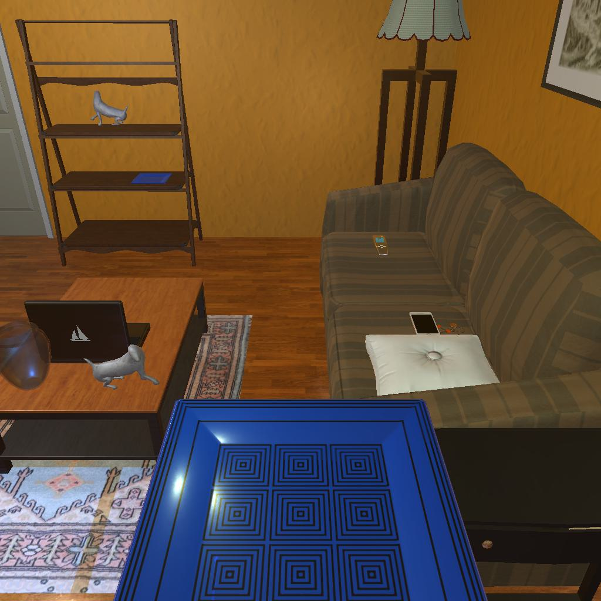

---------------------------------------------------------task: 3---------------------------------------------------------
--------------------------------------------------------------------------------------------------------------------------------------------------------------------
--------------------------------------------------------------------------------------------------------------------------------------------------------------------
Step:--------------------------------------------------------------------------6-------------------------------------------------------------------------------
----------------------------------------
VLM Prompt:
Image1:
**Instruction**
1. Analyze the provided image to identify all visible household objects, focusing on those relevant to the task description "look at plate under the floorlamp."
2. Use the analysis of the image and the task hint "The agent must find an object of the desired type, locate and turn on a light source with the desired object in-hand." to answer the question: what is the most reasonable action in the choices for the task description "look at plate under the floorlamp"?
4. Decide and write the answer using the template: The answer is: (i): , where i is the real number. If there is no desired object in the image, search every place based on **Initial Observation** to find the object. And if no one is exactly correct, choose a similar answer.
**Initial Observation**
You are in the middle of a room. Looking quickly around you, you can see armchair (1), garbagecan (1), tvstand (1), shelf (1-5), sofa (1), coffeetable (1), sidetable (1-2), drawer (1)
**Answer Choices**
(1): go to armchair 1
(2): go to garbagecan 1
(3): go to tvstand 1
(4): go to shelf 1
(5): go to sofa 1
(6): go to coffeetable 1
(7): go to sidetable 2
(8): go to drawer 1
(9): go to shelf 4
(10): go to shelf 5
(11): put plate 1 in/on sidetable 1
(12): use floorlamp 1
(13): examine plate 1
(14): examine sidetable 1
**Answer**
Let's think step by step by following the instructions.
----------------------------------------
----------------------------------------
Original Response:
Firstly, we need to identify all visible household objects relevant to the task description "look at plate under the floorlamp." From the image, we can see there are several objects, including a sofa, a shelf, a coffeetable, and a sidetable. However, we cannot see any plates or a floorlamp in the image.
According to the initial observation, there is a sidetable and a drawer in the room. Since the task is to look at a plate under the floorlamp, we need to find the plate first. As the image does not show any plates, we should search the places where a plate could be, such as on a shelf, a sidetable, or inside a drawer.
Considering the answer choices, we do not have an option to directly search for a plate, but we can infer that the plate could be on a shelf. Therefore, we can start by going to the shelf to search for the plate. Among the shelf options, shelf 4 and shelf 5 are the most likely places where a plate might be kept.
After finding the plate, we would need to locate and turn on a light source with the desired object in-hand, which would be the floorlamp. However, since there is no action to directly turn on the floorlamp in the choices, we will focus on finding the plate first.
The answer is: (9): go to shelf 4.
----------------------------------------
----------------------------------------
>>> Refine Original VLM Response and Get Pure Action: go to shelf 4
----------------------------------------
-----------------------------------------------------------------
Running time: 12.973116636276245 seconds
Total Money: 0.73225
-----------------------------------------------------------------
-----------------------------------------------------------------
Text Observation:You arrive at loc 11. On the shelf 4, you see a statue 2.
-----------------------------------------------------------------
UNSUCCEED